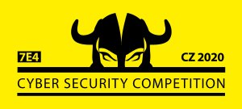

Ostatní soutěže
Bobřík informatiky 2021
6.12. 2021 Věra SvárovskáLetošní kolo informatické soutěže Bobřík informatiky 2021proběhlo ve dnech 15. a 16.11.2021.
Kategorie Junior se z naší školy zúčastnilo 98 žáků. Na prvním místě se umístil Tomáš Ďuráň z 2.Ai (130 bodů), druhé místo obsadil Tomáš Čermák z 2.Bi (125 bodů) a třetí místo vybojoval Šimon Tvrdý z 2.Ai (123 bodů). V kategorie Senior sbíralo bobříky 70 studentů. Nejlépe se umístil Matěj Retych z 4.Ai (176 bodů), což v celostátním pořadí znamená 58 místo z 5824 soutěžících. Druhé míst obsadil David Šálek z 4.Bi (155 bodů) a o třetí místo se podělil Jan Poláček z 3.Bi a Jakub Šimon z 3.Ai (152 bodů).
Do ústředního kola postupuje Matěj Retych a David Šálek. Dalších pět studentů se umístilo mezi náhradníky.
Gratulujeme a děkujeme všem za účast
Kybersoutěž – 2. kolo
21.5. 2021 Věra Svárovská
Do Výběrového kola soutěže v kybernetické bezpečnosti postoupilo z naší školy 76 žáků.
Nejlepšího výsledku dosáhl opět Tomáš Kubín ze třídy 3.Bi, který se v rámci celé České republiky umístil na 71. místě (z 481 účasníků). Druhý velmi úspěšný byl Martin Smitek z 3.Bi, který obsadil 88. místo a Jakub Koněrza z 3.Ai, který skončil na 94. místě.
Gratulujeme a děkujeme.
Kybersoutěž
6.1. 2021 Věra SvárovskáV období od 1.9.2020 do 31.10.2020 se naši žáci zúčastnili Osvětového kola soutěže v kybernetické bezpečnosti. Celkem se z naší školy zapojilo 145 studentů a do druhého kola postoupilo 76.
Nejlepšího výsledku dosáhl Tomáš Kubín ze třídy 3.Bi, který se v Středočeském kraji umístil na 10. místě (z 654 účastníků). Druhý velmi úspěšný byl Jaroslav Nový z 1.Ai, který obsadil 12. místo a Kateřina Vaverová z 4.Ai, která skončila na 16. místě.
Gratulujeme a přejeme hodně štěstí v druhém kole.
Bobřík informatiky 2020
26.11. 2020 Věra SvárovskáLetošní kolo informatické soutěže Bobřík informatiky 2020 proběhlo od 18.11.2020 – 20.11.2020 a umožnilo soutěžit žákům z domova. Žáci mohli získat v obou kategoriích nejvýše 192 bodů.
Kategorie Junior se z naší školy zúčastnilo 106 žáků. Na prvním místě se umístil Vojtěch Žmolík z 2.Ai (156 bodů), druhé místo obsadil Filip Novák z 2.Bi (143 bodů) a třetí místo vybojoval Ondřej Žárský z 2.Bi (141 bodů).
V kategorie Senior lovilo bobříky 78 studentů. Nejlépe se umístil Jaromír Kučera z 4.Ai (192 bodů), za ním byl Jan Houda z 4.Ai (180 bodů) a o třetí místo se podělil Jakub Hroník a Tadeáš Lang z 4.Bi (177 bodů).
Gratulujeme a děkujeme všem za účast!
Jsme na Facebooku
SPŠ Mladá BoleslavStáž v zahraničí
V rámci vzdělávacího programu Erasmus+ absolvují vybraní studenti zahraniční stáž v Anglii nebo v Irsku. Stáži předchází přípravné hodiny angličtiny. Třítýdenní pobyt je plně hrazen z prostředků projektu.
Více o ErasmuZřizovatel školy
Střední průmyslová škola, Mladá Boleslav, Havlíčkova 456 je příspěvková organizace zřizovaná Středočeským krajem.